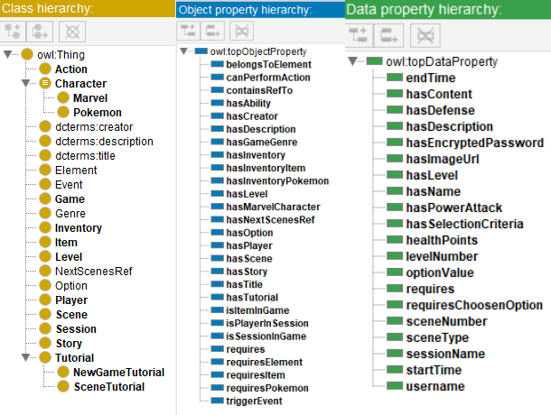

This technical report contains details about the internal data structures and the APIs to be used in the "Game On Web Of Data" #GaDa project.
Our project is going to be a simple web role playing game (RPG) having its characters described in RDF based on knowledge models. Also, interrogations will be performed by using SPARQL query language. The objective of this report is to explain what is the game logic, how it can be played, what characters and what data is taken into considerations from external APIs in order to create them. We will describe the components we will develope and integrate in our project.
Rules, limitations, player interactions, characteristics, and assets will be modeled and accessed by using RDF, SPARQL, RDF Schema, SKOS, and OWL.
Main tehnologies we have used:
The story will be influenced by the player' Pokémon, decisions, experience, and level.
The game has four levels and each level contains a number of scenes. The levels:
To see the entire story based on levels, click here.
The player can move his game character in different directions to different locations, can find hidden objects, can meet rivals NPC characters. Also, he can find and catch Pokémon.
At this point, the player can find only two items, one of them can increase the health points of the pokemon that used it, and the other one can decrease the health points of the pokemon that used in.
The player can find hidden objects while playing which can be used in order to get different benefits, gain or lose points.
There are two types of items: bad items, and good items. Bad items can harm the life of a Pokémon, while good items have the opposite effect and improve their life.
At the beginning of the game, the player can select from a list which Marvel character he wants to represent. Also, in the game will be NPC Marvel characters. Each character will have a set of pokémon with different powers and abilities. These pokémon will be used in battles with other Marvel characters' pokémon.
The available Marvel characters to be chosen at the begin of the game are: Namor (Water), Thor (Air), Dust (Earth), Human Torch (Fire)
Another characters are the pokemon that can be found on each level: squirtle (Water), pidgeot (Air), rockruff(Earth), and for the last level (Fire), the pokemon will not be found, it will have to be earned through battle.
There are NPCs who will be opponents in the fight:
The goal is to complete all levels by interacting with the NPC players, by answering at the given questions, and by accepting and winning pokémon battles with the NPC Marvel characters he can meet while exploring or by finding and collecting (and/or using) hidden items or/and different pokémon species.
A certain level can give the player's Pokémon more skills, powers, and make them stronger, increasing their chances to win a battle. More than that, different Pokémon, items, and NPC Marvel characters can show up after a specific level.
According to the current story of the game, he can catch a pokemon by winning a battle which takes place at the last level.
As the player explores various locations, he may encounter NPC rivals with whom he can start a battle.
Another type of action is the interaction between player and different NPCs where the player is asked a question and he can give an answer by choosing one possible response from the list of the available responses. Based on the given response, a specific scene may show up.
All interactions between players and the game itself is textual. The player can choose from a set of options the next move he wants to make by clicking on it (the available actions/moves are based on a specific context and given based on the current game state). The evolution of the story will be presented through a text. When needed, a help info can be shown at the interface (tutorial).
The DB we are using in our project is GraphDB, a database management system that is designed to store, manage, and query graph data. All relevent data such as users and their game state, characters (Marvel & Pokémon), abilities, items, players goes here.
The data is stored as a graph structure, consisting of nodes and edges. Each node represents a subject, predicate, or object in the RDF triple, and the edges represent the relationships between the subjects and objects.
As above said, the data is stored in GraphDB consisting of RDF triples. We have our ontology saved into a .owl file in the RDF/XML format (exported from Protege) and imported it into GraphDB by the help of GraphDB Workbench.
The ontology has the following hierarchy of classes, object properties, and data properties:

We save, update, retrieve, and delete our data through a SPARQL Endpoint which uses a connection with our GraphDB created by the help of RDF4J library.
The SPARQL Endpoint needs SPARQL Queries in order to perform the desired CRUD operations on the data. For example, when we want to
find a pokemon by name, we use the following query:

Or, when we want to update an item, we use the following query:

The complete ontology overview with VOWL plugin:
For our ontology we have used some existent ontologies:
The API provided by the server side is able to send data to the client.
Marvel enemies may be ganerated based on the levels: WATER, AIR, EARTH, FIRE. The name, imageURL, description for the marvel character is taken from MarvelAPI. The name, imageURL, abilities for the pokemon is taken from PokeAPI. The powerAttack, powerDefense, healthPoints for the pokemon are set based on the level. The RES_IDENTIFIER is an UUID to ensure the unicity of entities.
Players can be saved through this endpoint.
Players can log in through this endpoint.
Returns a list with all marvel characters in the database.
Returns a Marvel character having its name starting with the nameStartsWith if found from MarvelAPI. The result will be saved in the database.
Returns a list of pokemon in the database.
Returns a pokemon having its name as specified in the endpoint. The pokemon is taken from PokeAPI, and the result is saved in the database.
This component generates rules and strategies for both player and NPC players.
For example, a specific pokémon can only use the powers it has based on some game logic and according to the game level. There can be one or more constraints. For example, a specific pokémon can not use a specific power if the player has not reached a specific level.
It can decide when a battle ends and who the winner is.
The game state component contains the progress of the player, his points, his level. Based on the game state different actions can be generated. For example, based on a certain state:
This component is responsible for user registration and authentication.
This component will allow the user to change and save different game settings such as sound on/off, nickname change, text colors.
A prototype of user interface can be seen below.
Its components:
The project is structured into three main layers (3 tier architecture):
We will use the Marvel Comics API's base endpoint http(s)://gateway.marvel.com/ to get different resources in order to build our game characters. The resources provided by this API are represented as JSON objects and we will be able to access them through an API key.
From the available resources provided by the Marvel Comics API, we will use in our project the data about Marvel Characters: the women, men, organizations, alien species, deities, animals, non-corporeal entities, trans-dimensional manifestations, abstract personifications, and green amorphous blobs which occupy the Marvel Universe (and various alternate universes, timelines and altered realities therein). For example, Spider-Man. We will also use the image of each marvel character.
The concrete data we are take into consideration from this API is:
The second API we are going to use is PokéAPI. Its base endpoint is https://pokeapi.co/api/. This API has two versions v1, and v2. We will use the second version of it, v2. The endpoint we will use is https://pokeapi.co/api/v2/{endpoint}.
The resources provided by this API are represented as JSON objects and we are able to access them without an API key. This API can provide us useful resources in order to create pokémon with different powers, abilities, levels, and more.
From this API we take into consideration:
In conclusion, the team's project on "game on web of data" was a complex and demanding task, requiring a high level of expertise in web engineering and the use of different tools and technologies Despite the challenges faced, the team made notable progress and completed some of the initial goals. The project was developed following best practices in web engineering, including documentation, modularity, bug reporting, and modern source-code management. All data managed by the application was described in RDF, and various interrogations were performed using the SPARQL query language, demonstrating the team's understanding of the principles of the web of data.